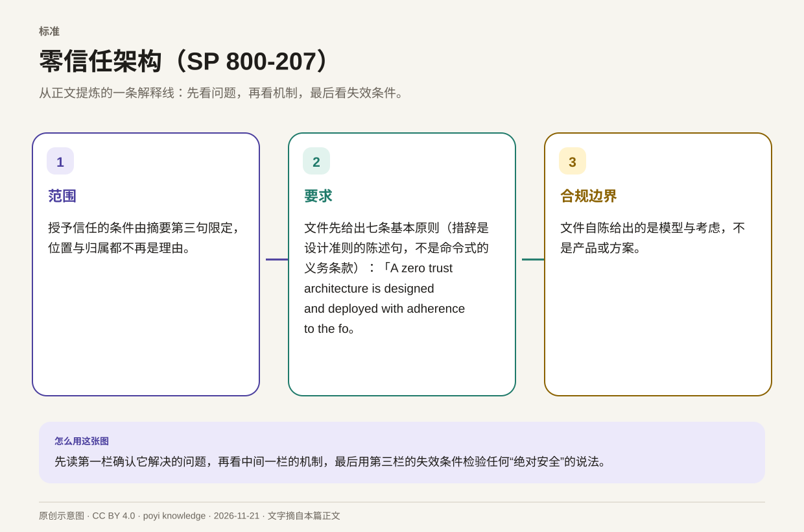
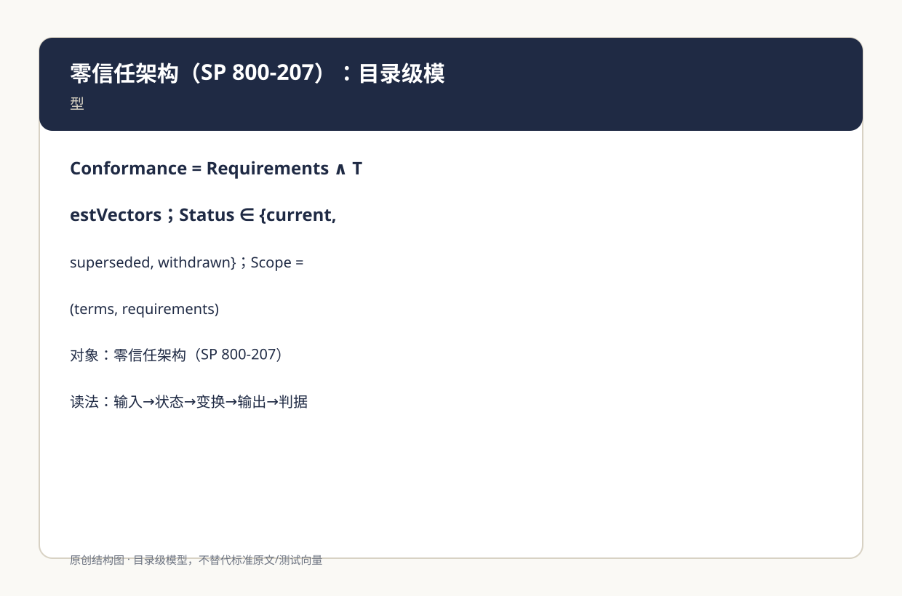

原理与机制
标准：零信任架构（SP 800-207）（Zero Trust Architecture (SP 800-207)）。摘要第一句给术语定位：「Zero trust (ZT) is the term for an evolving set of cybersecurity paradigms that move defenses from static, network-based perimeters to focus on users, assets, and resources.」第二句给出架构一词：「A zero trust architecture (ZTA) uses zero trust principles to plan industrial and enterprise infrastructure and workflows.」核心假设紧随其后：「Zero trust assumes there is no implicit trust granted to assets or user accounts based solely on their physical or network location (i.e., local area networks versus the internet) or based on asset ownership (enterprise or personally owned).」§1 再补一句定义：「A zero trust architecture (ZTA) is an enterprise cybersecurity architecture that is based on zero trust principles and designed to prevent data breaches and limit internal lateral movement.」两句定义各管一层：前者把焦点从网络边界移到用户、资产与资源，后者把 ZTA 定位成企业网络安全架构并给出目的；授予信任的条件由摘要第三句限定，位置与归属都不再是理由。

为什么重要
动机是企业网络趋势使边界失效：「Zero trust is a response to enterprise network trends that include remote users, bring your own device (BYOD), and cloud-based assets that are not located within an enterpriseowned network boundary.」§1 说明边界为何不够：「Perimeter-based network security has also been shown to be insufficient since once attackers breach the perimeter, further lateral movement is unhindered.」并把对手假设写实：「Zero trust security models assume that an attacker is present in the environment and that an enterprise-owned environment is no different--or no more trustworthy--than any nonenterprise-owned environment.」§2 给出焦点转移：「Zero trust focuses on protecting resources (assets, services, workflows, network accounts, etc.), not network segments, as the network location is no longer seen as the prime component to the security posture of the resource.」四段串成一个论证：边界先失去意义，因为资产已不都在企业网络之内；边界失效的代价是横向移动不受阻；于是模型假定对手已在环境里，防护须围绕资源逐次判定，而非围绕网段。
应用与实例
文件先给出七条基本原则（措辞是设计准则的陈述句，不是命令式的义务条款）：「A zero trust architecture is designed and deployed with adherence to the following zero trust basic tenets:」第一条即「All data sources and computing services are considered resources.」§2 又给出一条总体要求：「Overall, enterprises need to develop and maintain dynamic risk-based policies for resource access and set up a system to ensure that these policies are enforced correctly and consistently for individual resource access requests.」并建议不要以登录推断后续请求可信（原文是 should not，不是禁止）：「This means that an enterprise should not rely on implied trustworthiness wherein if the subject has met a base authentication level (e.g., logging into an asset), all subsequent resource requests are assumed to be equally valid.」§3 把职责落到若干逻辑组件（原文自陈组件众多）：策略引擎「This component is responsible for the ultimate decision to grant access to a resource for a given subject.」与执行点「This system is responsible for enabling, monitoring, and eventually terminating connections between a subject and an enterprise resource.」同时声明这是模型：「Note that this is an ideal model showing logical components and their interactions.」

边界与攻击面
文件自陈给出的是模型与考虑，不是产品或方案。摘要写：「This document contains an abstract definition of zero trust architecture (ZTA) and gives general deployment models and use cases where zero trust could improve an enterprise's overall information technology security posture.」Audience 段补：「It is not intended to be a single deployment plan for ZTA as an enterprise will have unique business use cases and data assets that require safeguards.」§1 同样强调原则性质：「ZT is not a single architecture but a set of guiding principles for workflow, system design and operations」，并说明迁移是过程：「Transitioning to ZTA is a journey concerning how an organization evaluates risk in its mission and cannot simply be accomplished with a wholesale replacement of technology.」§5 直说风险不被消除：「No enterprise can eliminate cybersecurity risk.」并列出架构自身的新风险：「Any enterprise administrator with configuration access to the PE's rules may be able to perform unapproved changes or make mistakes that can disrupt enterprise operations.」三处自陈叠加：文件给的是定义与模型，不给部署计划，也不宣称消除风险，它甚至把决策组件自身列为攻击面。
历史与背景
扉页首行为「NIST Special Publication 800-207」，作者与部门行连读为「Scott Rose Oliver Borchert Advanced Network Technologies Division Information Technology Laboratory」，其后另列两位作者的机构：「Stu Mitchell Stu2Labs」与「Sean Connelly Cybersecurity & Infrastructure Security Agency」，DOI 行是「This publication is available free of charge from:」，DOI 10.6028/NIST.SP.800-207。Authority 段引用行给出日期与页数：「Natl.Inst.Stand.Technol.Spec.Publ.800-207, 59 pages (August 2020)」。关键词行是「architecture; cybersecurity; enterprise; network security; zero trust.」署名页（本文拼作 Acknowledgments）交代出处：「This document is the product of a collaboration between multiple federal agencies and is overseen by the Federal CIO Council.」并点名参与者：「These include Greg Holden, project manager of the Federal CIO Council ZTA project」。以上合起来是这份文件的门板事实：编号与标题、四位作者及其机构、八月出版的日期与页数、免费获取的 DOI 行，以及联邦机构协作的署名说明。
逐步示例与核验
形式模型与复算步骤
[S=\min_i S_i,\quad S_i\in{\text{密钥强度},\text{分组安全},\text{实现安全}}]
零信任架构（SP 800-207）的公开参数、密钥/随机数与消息；变量说明：S 为综合安全强度；各分量取最小值，不能只看密钥位数。1.读取标准规定的密钥/分组/模式参数。2.按标准表换算等效强度。3.取最弱分量作为系统强度。边界：公式只覆盖已登记的参数与假设；参数取值、标准版本和实现细节仍以来源为准。
参考出处
- Wikipedia search entry for 零信任架构（SP 800-207）. https://zh.wikipedia.org/w/index.php?search=%E9%9B%B6%E4%BF%A1%E4%BB%BB%E6%9E%B6%E6%9E%84%EF%BC%88SP%20800-207%EF%BC%89
- Handbook of Applied Cryptography (Menezes, van Oorschot, Vanstone). https://www.cacr.math.uwaterloo.ca/hac/